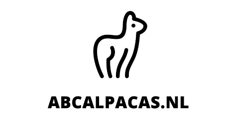

Van harte welkom op de website van ABC Alpaca's!
Wij zijn Lieke en Veerle van Merwijk en delen sinds 2018 met veel plezier ons leven met onze eigen alpaca's. Onze dieren stammen af van de bloedlijnen van de kudde van onze ouders, bekend van Alpacas of the Lowlands.
Wat alpaca's voor ons zo bijzonder maakt, is hun vriendelijke karakter. Ze zijn nieuwsgierig, rustig en vaak verrassend aanhankelijk. Onze kudde bestaat uit zowel Suri's als Huacaya's, in verschillende kleuren, waaronder prachtige multicolor- en zwarte alpaca's.
Wij wensen u veel leesplezier. Heeft u vragen of wilt u meer weten? Neem dan gerust contact met ons op. Wij helpen u graag verder.

Altijd al eens tussen de alpaca's willen staan?
Wij geven verschillende activiteiten op onze Alpaca Farm in pittoresk Haaften, Gelderland. Kom bijvoorbeeld wandelen met de alpaca's terwijl u leert over de omgeving en natuurlijk, onze dieren. Of stimuleer de creativiteit van vrienden, familieleden, of medewerkers met de workshop Schilderen met alpaca's. Liever alleen een hapje en een drankje? Ons theehuis tussen de alpaca's is deze lente en zomer voor u open!
Laat uw creativiteit tot leven komen tijdens onze gezellige workshop Schilderen tussen de Alpaca's op de Alpaca Farm in het pittoreske Haaften. Terwijl de alpaca's nieuwsgierig om u heen lopen, geniet u van een ontspannen en inspirerende sfeer op het platteland. Tijdens de workshop vertellen wij daarnaast leuke en interessante weetjes over onze alpaca's, zodat u deze bijzondere dieren nog beter leert kennen.
Of u nu een ervaren kunstenaar bent of gewoon zin heeft in een gezellige activiteit, iedereen kan meedoen! Neem plaats tussen de alpaca's, pak een penseel en laat u inspireren.
Bekijk alle activiteiten
[tekst volgt]
[tekst volgt]

[adres volgt]
[openingstijden volgen]